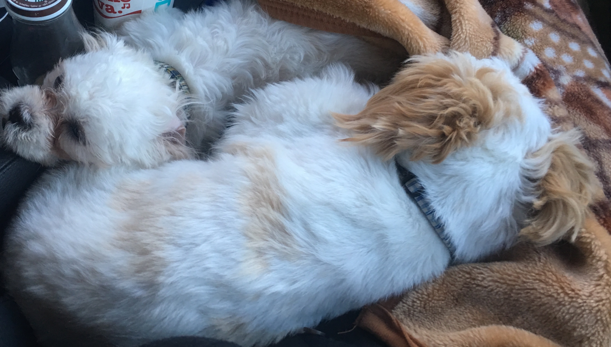
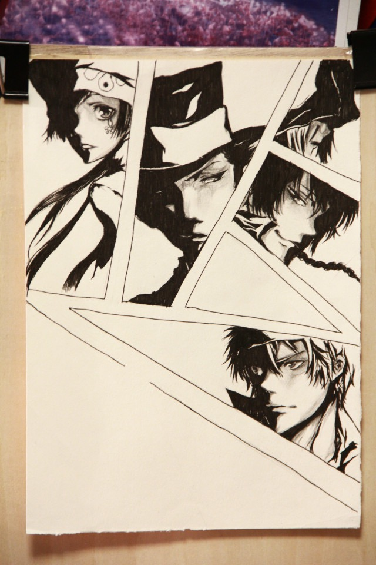
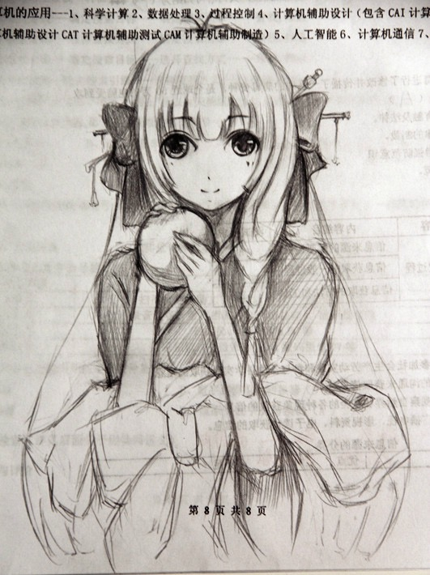

Welcome to Di's website
  I have a lot of hobbies, my favourite is drawing and swimming. I habe learned drawing over seven years, but I am not good at swimming, I am trying to learn it now.
I have three dogs, one is in China , her name is tutu, and another two are here, they are Qiuqiu and Coco. They are really lovely, Shiztu is one of the most cute dog in the world!
I really want to learn more about game design, I am really interesting in it! Now I am making an digital game, I feel really excited!
I am an international student from China, I feel really lucky I can come here to study. And finally I choose the major which I am interested in. I hope I can learn more from the classes
It's really hard but important to choose a major. I was interior major before, actually I don't like this major, but because of my parents and my future job, I choose this major. But after this half semester, I feell like I am really intersted in IMS major, when I built my own website and made my own game, I felt really happy. '
My life is really interesting, when I was 5 years old, I just learned dance, tennis and I have benn to the dancing show before, but as the time past, I feel like I want to draw what I think about, and I really admired the person who can draw very well, I feel peaceful when I am drawing.